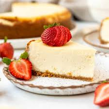
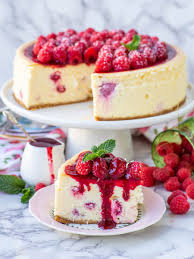
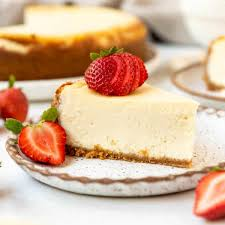
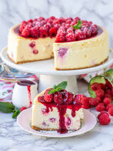

Old Fashioned Cheesecake
Ingredients:
- 1 and 1/2 cups finely crumbled graham crackers
- 6 tablespoons melted butter
- 1 pound cream sugar
- 1/4 cup sugar
- 1 tablespoon Vanilla Bean Paste
- 1 and 1/4 cups Sugar
- 1 Teaspoon Vanilla Extract
- 3 Large eggs
- 1 cup Sour Cream
- 1/8 teaspoon Salt
Preparation Instructions:
- Prepare graham cracker crust - mix together with a fork until all Ingredients are moistened.
- Spread the mixture evenly in 10 inch pan. Using your fingertips or the flat bottom of a drinking glass
- firmly press the mixture over the bottom and 1/2 inch up the sides of a pan. Freeze for 20 minutes.
- For a crunchier crust bake in a preheated 350 degree oven until lightly browned, 10 to 15 minutes instead of freezing it.
- Preheat oven to 300 degrees. In a medium bowl, beat cream cheese until creamy, about 30 seconds. Do not over beat.
- Gradually beat in a 1 cup sugar and vanilla extract. Beat in 1 egg at a time, just until incorporated,
- scraping the sides of the bowl and the beater after each addition.
- Scrape the batter into the crust and smooth the top. Place on a cookie sheet.
- Bake until the center just barely jiggles when the pan is tapped, 45 to 55 minutes.
- Turn off the oven, prop the door ajar with a folded hot pad or the handle of a wooden spoon and let the cake cool in the oven for 1/2 an hour.
- Remove from the oven and continue to cool in the pan on a rack for at least 1 hour.
- Combine sour cream, 1/4 cup sugar, vanilla bean paste and salt in a small bowl.
- Spread over the cake. Let cool completely in the pan.
- Cover and refrigerate for at least 3 hours preferable 24 hours, before serving.
| Prep Time |
Additional Time |
total Time |
| 15 Mins |
30 Mins |
45 Mins |